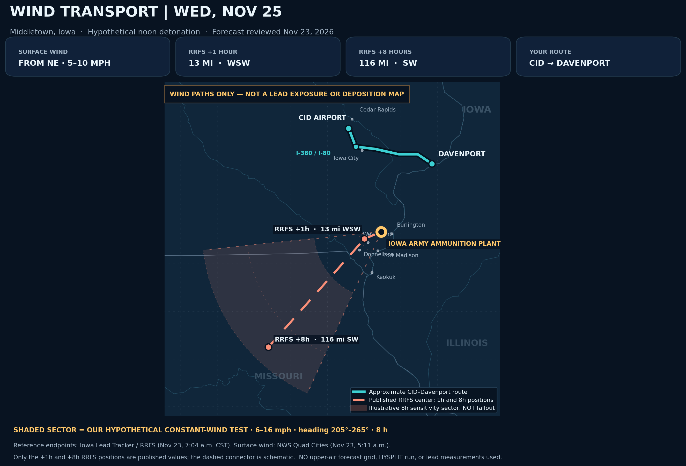
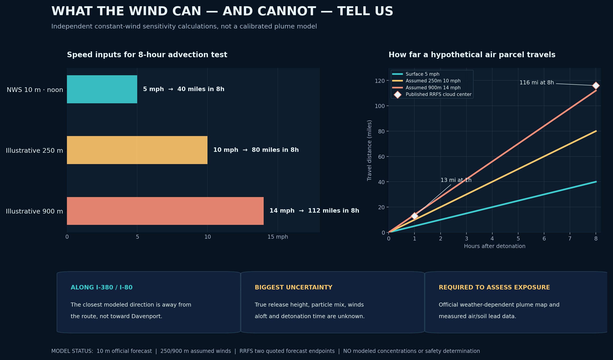

LATEST MANUALLY VERIFIED ARMY ANNOUNCEMENT
Wednesday, November 25
The Army announced a new planned date of November 25. No exact detonation time had been confirmed.
Read the Army announcement ↗Verified against the Army's November 22 statement
A transparent look at where forecast air parcels could travel from the Iowa Army Ammunition Plant—across different heights, release times and weather models.
Colored lines represent idealized air-parcel trajectories based on model winds, not the width or concentration of a hazardous plume. They cannot establish whether a route or community is safe. Follow official alerts and measured environmental monitoring.
Forecast-driven, forward air-parcel trajectories from Middletown. Release times are hypothetical until the Army confirms a time.
Compare modeled wind directions and speeds at the release point. “From” follows meteorological convention; the trajectory goes the other way.
Pressure heights are approximations. The 925 hPa and 850 hPa levels are typically around 0.8 km and 1.5 km above sea level, respectively. For an actual explosion, material could rise or fall between these layers; this site does not compute that behavior.
These graphics came from an earlier static screening exercise. They do not automatically update and are not replacements for the live trajectories above.


The Army announced a new planned date of November 25. No exact detonation time had been confirmed.
Read the Army announcement ↗The site periodically checks selected official pages for changed text. A changed page is not necessarily a new safety finding and requires human review.
Browse the primary sources ↗Source code, equations, data lineage and limitations are public because transparency matters more than a convincing-looking plume.
GitHub Actions periodically requests multiple locations from Open-Meteo's NOAA GFS / RRFS and ECMWF APIs. Source fields include wind speed and meteorological direction at 10 m, 80 m, 925 hPa and 850 hPa. Each provider is reported separately; failed providers are omitted rather than fabricated.
The site converts wind speed/direction to east/north velocity, then interpolates those vectors between surrounding geographic sample points and adjacent forecast hours. API point forecasts are samples, not a native, perfectly resolved model grid.
An idealized parcel starts at the plant at the selected release time and stays on one nominal wind level. Midpoint (second-order Runge–Kutta / RK2) integration advances it in 15-minute increments, until eight hours or until winds are unavailable.
Approximate waypoints mark the normal CID Airport → Davenport route via I-380 and I-80. The closest approach is a geometric distance between a predicted parcel centerline and that approximate route. It is not a plume width or an estimate of safety.
Where θ is the direction the wind comes from, measured clockwise from north, and S is its speed.
A 15-minute midpoint step, using winds sampled at the projected midpoint.
It does not model explosion physics, release mass, particle-size distributions, height of the actual cloud, dry/wet deposition, resuspension, atmospheric turbulence, vertical mixing or dose. Multiple trajectories are not a probability cone. It is not NOAA HYSPLIT or an EPA regulatory dispersion model, and it has not been calibrated against observations.
Crucially: no trajectory near a route does not mean contamination; no trajectory near a route does not guarantee absence of contamination. Look to official plume/deposition modeling and measured air/soil results for that distinction.
Forecast meteorology, government announcements, and environmental measurements are different kinds of evidence. This site does not substitute one for another.
The data collector, trajectory math, map interface, scheduled publishing workflow, official-source watcher and tests are in the public repository. No proprietary model, magic weights or hidden “AI safety score.”
iowa-plume-watch/
├── index.html
├── assets/
│ ├── css/style.css
│ ├── js/app.js
│ ├── js/trajectory.js
│ └── images/
├── scripts/
│ ├── build_forecast.py
│ └── watch_official_sources.py
├── tests/
├── data/
│ ├── forecast.json
│ ├── official-status.json
│ └── source-watch.json
└── .github/workflows/
└── update-and-deploy.yml